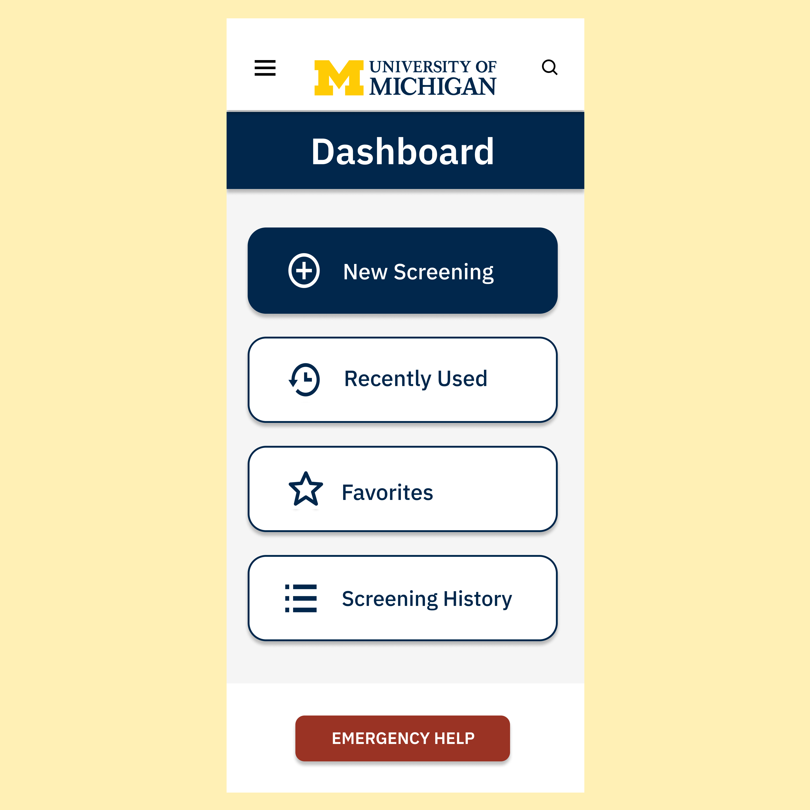

I was recently admitted into the School of Information to pursue a Bachelor of Science in Information Science. I will be taking the Information Analysis Pathway because I hope to work in legal technology and privacy protection in the future.I also have a minor in Sociology, but more specifically Law, Justice, and Social Change. I am extremely interested in ethical technology, which is why I chose this minor.This major and minor pairing may not seem cohesive at first, but I am very interested in the intersection between law and technology. I want to study how we can make the collection of data, specifically governmental data, safer, more ethical, and more efficient.I am currently part of a research program called the Undergraduate Research Opportunity Program, better known as UROP.The specific research team I am on is called HealingU, and we are working to create an app that makes the process of finding and using mental health resources at UM easy for all members of the community. I am on the UX/UI team, and although I will not be studying this at UMSI, it has still been a great learning experience.I wanted to display a few screens from the app so that our purpose and process would be easier to understand. This is the welcome screen that allows users to log in or quickly access emergency services.This is the crisis services page that allows users to access vital, potentially life-saving resources without having to log into the app.

The dashboard is the hub for all functions of the app. Users can start a new mental health screening, look at their recently used resources, locate their saved resources, or view their previous answers from old screenings. Users can also search directly for a certain resource or access emergency services from this screen.This is an example of what a resource page would look like. After users answer questions about their location, status, feelings, and concerns, they will be shown resources that fit their needs. By clicking on a resource, one can learn more about it as well as contact the resource or make an appointment.